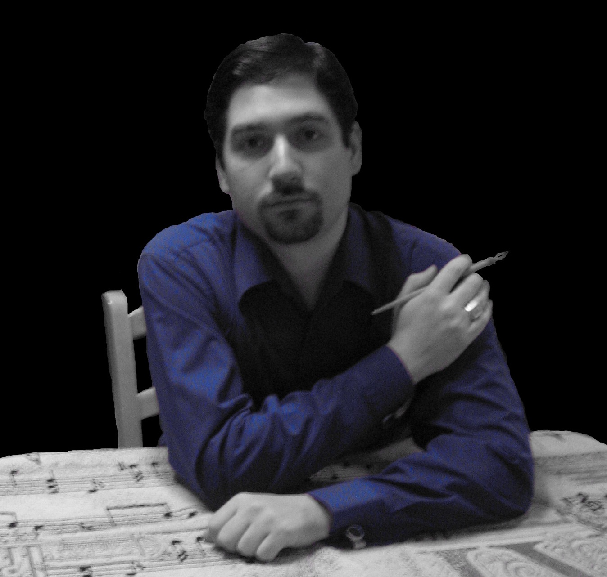

Anthony Valentino
language
English
Gaeilge
Welcome to the personal homepage of Anthony Valentino. Mr. Valentino received a Master's degree in teaching from
Montclair State University
and a Master's degree in English from
Monmouth University
.
He is currently an adjunct professor of English at
Caldwell College
,
Brookdale Community College
and
Middlesex County College
in Central New Jersey.
He also teaches Irish at
Monmouth University
and is a doctoral student at
Drew University
.
Mr. Valentino is dedicated to revival of the
Irish Language
as a literary and community language and its development as a global medium of communication.
He enjoys
writing
poetry and stories